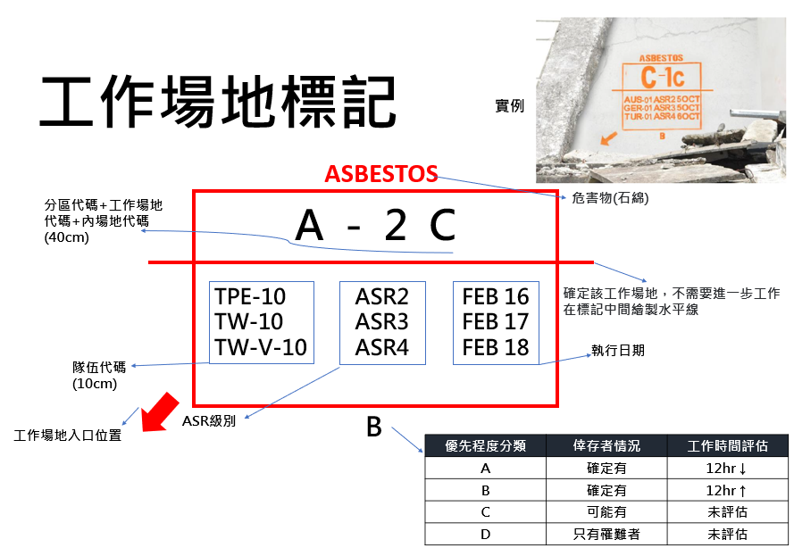
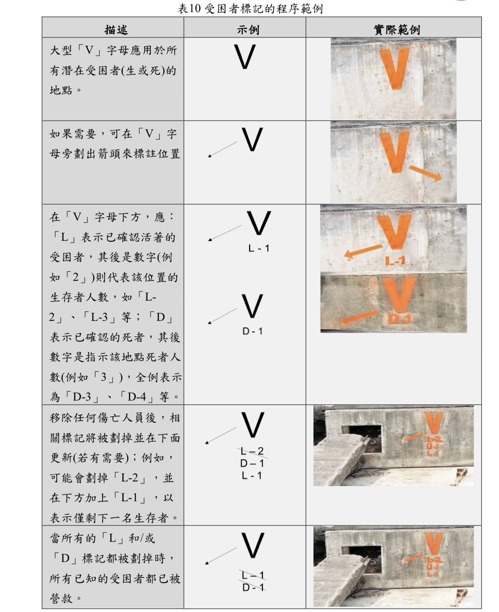
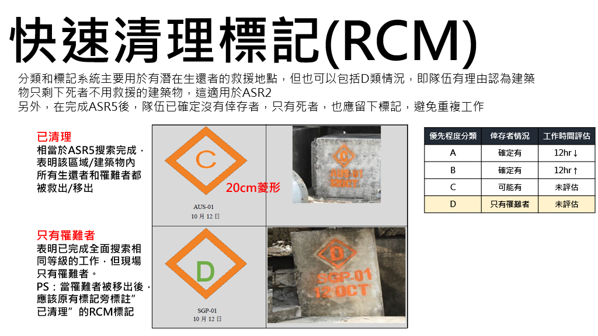

09:41
任務概覽
ASR2 · 台東消防 TW-V-10
進行中
ASR2 — 快速評估任務
人員
17人
場地
A-1
時間
00:00
整體任務進度
35%
📡
UCC 指令
工作場地 A-1 已分配，請帶隊官確認人員集合後出發
🚨
MAYDAY
長按 3 秒啟動緊急呼叫
人員分工
🎖️
帶隊官
管理組 · 1名
指揮
›
📋
管理幕僚
救援組 · 1名
文管
›
🦺
安全官
救援組 · 1名
安全
›
🔍
搜索1組
搜索組2名 + 結構技師
搜索
›
🔎
搜索2組
搜索組 · 2名
搜索
›
🚧
搜索3組
救援組 · 2名
管制
›
🏥
醫療組
2名
醫療
›
⛏️
救援組
5名
救援
›
作業流程
ASR2 標準程序
1
BoO — 任務領取
管理組前往UCC接受工作場地分配，返回後召集ASR2人員進行任務簡報
UCC
簡報
2
出發前準備
換洗衣物→健康檢查→消毒罐→共裝整理→穿個裝→入口管制集合
準備
器材
3
抵達工作場地
設立緊急集合地點、搭設前進指揮所，安全官說明冷熱區分配
安全
冷熱區
4
快速搜索
三組同步展開：環境風險評估、位移偵測、封鎖線管制，精密儀器輔助
搜索1組
搜索2組
搜索3組
5
評估回報
繪製受困者標記與工作場地標記，醫療組評估生命徵象，決定ABCD等級
醫療
A/B/C/D
6
撤離與清消
上車前完成消毒，裝備全部收整，向入口管制站報到，前往下一場地
清消
下一場地
7
返隊
清消通道→更換衣物→入口管制報到→清點人員→救護站健康檢查→資料回報
收隊
健康檢查
器材清單
點擊勾選確認攜帶
① 驗電棒
② 五用氣體偵測器
③ 雷射位移監測儀
④ 聲納搜索儀
⑤ 蛇管鏡
⑥ 地音探測器
⑦ 無線電
⑧ 平板電腦
⑨ 紙本工作表 & 平面圖
⑩ 消毒罐
⑪ 瓦斯汽笛
⑫ 指揮帳
⑬ 人員管制板
⑭ 封鎖線
⑮ 急救包
⑯ 水 & 乾糧
⑰ 個人防護裝備（全套）
已確認：0 / 17 項
場地評估
工作場地狀態總覽
受困者等級
A
確定有人
12小時以內，可接觸受困者
B
確定有人
12小時以上，可接觸受困者
C
可能有人
無法確認，關係人指稱有人
D
僅罹難者
無存活者跡象
任務場地
場地 A-1
評估中
台東市中正路 xxx 號
C
受困等級
RC造
建築類型
30分
已用時間
場地 A-2
待命
台東市更生路 xxx 號
—
受困等級
待評估
建築類型
—
已用時間
INSARAG 訊號
🚨
撤離
3短聲，每次1秒｜重複至疏散完畢
－ － －
🔇
動作暫停（安靜）
1長聲，持續3秒
———
▶️
恢復動作
1長聲 + 1短聲
—— －
工作場地標記
🔲
工作場地標記
INSARAG 標準格式，點擊查看圖示
›
受困者標記
🔴
受困者標記
INSARAG 標準格式，點擊查看圖示
›
快速清理標記 RCM
🔶
C — 已清理
所有生還者與罹難者皆已救出/移出
›
🔶
D — 只有罹難者
完全搜索後現場只有罹難者
📐
20cm 菱形
橘色噴漆，含隊伍代碼與日期（如 AUS-01 10月12日）
代碼說明
🇹🇼
國內代碼 TW-V-10
✈️
出國代碼 TPE-10
任務
流程
器材
3
場地
🚨
MAYDAY 程序
緊急狀況啟動流程
INSARAG 撤離訊號
!
由
安全官
負責瓦斯汽笛使用
撤
3短聲（每次1秒）
，重複至現場疏散完畢
離
依撤離路線前往集結區，撤離完畢
應清點人數
回
帶隊官在集結區
清點人員
，向UCC回報
集結區規定
!
冷熱區由
安全官
於抵達現場後立即劃定
!
集結區位於
冷區
，所有非作業人員於此待命
🎖️
帶隊官
管理組 · 1名
職責
1
任務說明與分工安排
2
蒐集現場情資，進行現場決斷
3
每個工作場地結束後向管理組回報
4
轉報 UCC 判斷是否立即派隊前往
📋
管理幕僚
救援組 · 1名
職責
1
出發前確認所攜器材數量
2
協助蒐集現場情資
3
繪製
平面圖
、填寫「工作場地評估表」
4
與現場民眾、關係人接洽，判斷特殊狀況（金庫、倒塌、建築結構、倉庫內容物）
5
負責現場拍照或錄影
🦺
安全官
救援組 · 1名 · 專注於安全
職責
1
集結區冷熱區劃定
，說明撤離、集結、哨音規定
2
負責現場任務安全監控
3
負責
緊急狀況瓦斯汽笛
使用
🔍
搜索1組
搜索組2名 + 結構技師
職責
1
使用
五用氣體偵測器
、
驗電棒
進行環境風險評估
2
執行
快速搜索
3
協助
結構技師
判定建築物安全性
4
描繪「受困者標記」及「工作場地標記」（攜帶筆）
結構技師
!
就現場建築物是否能執行救援進行安全認定
!
提供有關結構安全諮詢
🔎
搜索2組
搜索組 · 2名
職責
1
架設
位移偵測儀
2
架設完畢後隨第一組進行快速搜索
3
攜帶
精密儀器
，視情況進行儀器搜索
4
研判是否可立即處理，或需後續救援組（ASR3）
🚧
搜索3組
救援組 · 2名
職責
1
架設
集結區帳篷
2
拉
封鎖線
，協助劃設冷熱區
3
管制現場人員進出
4
如有需要，結合1、2組進行搜索
🏥
醫療組
2名
職責
1
攜帶基本救護器材，於現場
隨時待命
2
救難人員受傷醫療
為優先
3
如可接觸受困者，評估其
生命徵象
4
協助決定搶救優先順序（A/B/C/D）
⛏️
救援組
5名
職責
1
執行現場「
快速搜索
」任務
2
架設
集結區帳篷
3
BoO 領取任務 + 器材整理
① BoO — 任務領取
出發前準備階段
步驟
1
管理組人員前往
UCC
接受工作場地分配
2
返回管理組，召集ASR2人員進行
任務簡報
與工作提示
3
個人換洗衣物放置盥洗處
4
救護組健康檢查，領取消毒罐
5
整理共裝放置側門
6
穿著個裝後至
入口管制處
集合
7
向出入口管制報到後
出發
② 出發前準備
器材確認、健康檢查
流程
1
個人換洗衣物放置盥洗處
2
救護組健康檢查並領取
消毒罐
3
整理共裝放置側門
4
穿著
個人防護裝備
後到入口管制處集合
③ 抵達工作場地
初期建立指揮架構
步驟
1
設立
緊急集合地點
，搭設前進指揮所
2
安全官說明工作分配、冷熱區，提示安全注意事項及集結區劃定
3
管理幕僚接觸
現場關係人
，蒐集情資，繪製平面圖、填寫工作場地評估表
④ 快速搜索
三組同步展開
各組任務
1組
驗電棒 + 五用偵測器進行
環境風險評估
，判定建築物安全性
2組
架設
位移偵測儀
，攜帶精密儀器輔助搜索
3組
拉
封鎖線
、劃分冷熱區、管制人員進出
⑤ 評估回報
ABCD 等級判斷
受困者等級
A
有人，12小時以內
，可接觸
B
有人，12小時以上
，可接觸
C
可能有人
，關係人說有但找不到
D
只有罹難者
回報流程
1
評估完畢後
回報管理組
該場地情形
2
管理組轉報
UCC
，協助後續救援任務派遣
⑥ 撤離與清消
上車前完成
步驟
1
上車前完成
消毒工作
2
裝備
全部收整
（下次不一定分配到同樣場地）
3
離開現場，前往下一場地，重複1-6工作項目
⑦ 返隊
收隊程序
步驟
1
BoO 門口經過
清消通道
，更換衣物
2
確認自身清潔後，前往
入口管制站報到
3
清點返隊人員
4
前往
救護站
檢查健康情形（2小時內可分別前往）
5
將現場相關資料
回報管理組
（並轉交 UCC）
6
由 UCC 下達下一任務指派（ASR3）
場地 A-1
台東市中正路 xxx 號 · 評估中
現況
!
關係人描述有人受困，現場尚未確認，暫評
C 級
i
RC造 5層樓，1~2樓部分倒塌，結構技師評估中
✓
瓦斯已關閉，電力已斷路
場地 A-2
台東市更生路 xxx 號 · 待命
現況
—
尚未派隊評估，等待 UCC 指派
📢
INSARAG 訊號
國際搜救顧問組標準訊號
訊號對照表
撤離
－－－
3短聲，每次1秒
重複至現場疏散完畢；撤離完畢，應清點人數
暫停
———
1長聲，持續3秒
動作暫停（安靜）
恢復
—— －
1長聲 + 1短聲
恢復動作
注意事項
!
由
安全官
負責瓦斯汽笛操作
!
撤離完畢後，帶隊官應立即於集結區
清點人數
🔲
工作場地標記
INSARAG 標準格式

🔴
受困者標記
INSARAG 標準格式

🔶
快速清理標記 RCM
Rapid Clearance Marking
快速清理標記
